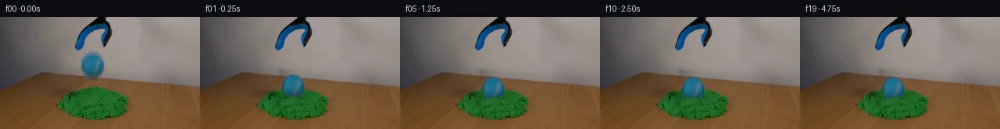

![首帧]()

Round 00
2026-11-04T20:44:11.493786+00:00像素候选变化代码 +141/−0inspection 更新
pixels f97411801e0e4506 · code 9d38a34bf6be4515
查看本轮 generate.py 真实 diff
--- previous/generate.py
+++ current/generate.py
@@ -0,0 +1,141 @@
+"""Deterministic, local pixel continuation of the supplied photographic frame."""
+from pathlib import Path
+import numpy as np
+from PIL import Image, ImageDraw
+from scipy.ndimage import gaussian_filter, map_coordinates
+from artifact_io import save
+
+ROOT = Path(__file__).resolve().parent
+src = np.asarray(Image.open(ROOT / 'first_frame.png').convert('RGB'), dtype=np.float64)
+H, W = src.shape[:2]
+y, x = np.mgrid[:H, :W].astype(float)
+rng = np.random.default_rng(18)
+
+def sample(arr, sx, sy):
+ if arr.ndim == 2:
+ return map_coordinates(arr, [sy, sx], order=1, mode='nearest')
+ return np.stack([map_coordinates(arr[..., c], [sy, sx], order=1, mode='nearest') for c in range(3)], axis=-1)
+
+def blend(a, b, m):
+ return a * (1-m[..., None]) + b * m[..., None]
+
+# Reconstruct only the little patch vacated by the falling ball. Neighboring
+# pixels are sampled at an equal height relative to the table's rear edge.
+left = sample(src, x-30, y-2.68)
+right = sample(src, x+30, y+2.68)
+w = np.clip((x-98)/40, 0, 1)
+replacement = left*(1-w[..., None]) + right*w[..., None]
+# The gray wall is smooth: a local quadratic fit avoids duplicated texture.
+wall_region = (x>79)&(x<157)&(y>43)&(y<73)&(((x-118.4)/22)**2+((y-62)/24)**2>1)
+features = np.stack([np.ones_like(x), (x-118)/40, (y-60)/30,
+ ((x-118)/40)**2, (x-118)*(y-60)/1200,
+ ((y-60)/30)**2], axis=-1)
+coef = np.linalg.lstsq(features[wall_region], src[wall_region], rcond=None)[0]
+wall = features @ coef
+wall_weight = np.clip((69-y)/5, 0, 1)
+replacement = blend(replacement, wall, wall_weight)
+remove_q = np.sqrt(((x-118.3)/18.6)**2+((y-63)/22.3)**2)
+remove = np.clip((1.1-remove_q)/.18, 0, 1)
+remove *= (y>=42)
+clean = blend(src, replacement, remove)
+
+# Alpha matte for the soft blue object. Recover its original colors from
+# the estimated background and retain the original curved seam.
+cx0, cy0, rx, ry = 118.3, 62.1, 14.1, 15.5
+q0 = ((x-cx0)/rx)**2 + ((y-cy0)/ry)**2
+original_alpha = gaussian_filter((q0<1).astype(float), 1.30)
+color = (src-clean*(1-original_alpha[..., None]))/np.maximum(original_alpha[..., None], .19)
+color = np.clip(color, [8, 45, 55], [85, 153, 177])
+color = gaussian_filter(color, (.35, .35, 0))
+color = np.clip(color + .35*(color-gaussian_filter(color, (1.1,1.1,0))), 0,255)
+# Small fixed felt variations, attached to the ball rather than flickering.
+felt = rng.normal(0, .8, (H,W))
+color += felt[..., None]*np.array([.65,1,1])
+
+sand_mask = ((src[...,1]>src[...,0]*1.40)&(src[...,1]>src[...,2]*1.55)&(y>87)&(x>69)&(x<170)).astype(float)
+sand_mask = gaussian_filter(sand_mask,.38)
+contact_x, contact_y = 118.8, 104
+radius = np.sqrt(((x-contact_x)/23)**2+((y-contact_y)/18)**2)
+radial = np.exp(-radius**2*1.3)
+base_dx = (x-contact_x)*.080*radial
+base_dy = (y-contact_y)*.06*radial + 1.2*np.exp(-((x-contact_x)/18)**2-((y-94)/9)**2)
+
+# The front sand rim uses source grains, displaced upward near the contact.
+rim_height = (105.0 - 2.6*np.exp(-((x-118.8)/10)**2)
+ + .7*np.sin(x*1.31) + .40*np.sin(x*2.4))
+
+# A few tiny existing green grains briefly shift out from the indentation.
+grain_colors = [src[110,99],src[106,140],src[116,124],src[112,88]]
+
+def render(t):
+ if t == 0:
+ return src.astype(np.uint8)
+ center_y = [0,88.5,92.0,91.5,91.8,92.0][min(t,5)]
+ center_x = 118.8
+ compression = [0,1.24,1.08,1.025,1.008,1][min(t,5)]
+ sx, sy = x-base_dx*compression, y-base_dy*compression
+ warped = sample(src, sx, sy)
+ # Extend the textured pile boundary by a couple pixels as it compresses.
+ warped_mask = sample(sand_mask,sx,sy)
+ influence = np.maximum(warped_mask, sand_mask)
+ out = blend(clean,warped,influence)
+ # Local contact shadow and shallow indentation, following mound texture.
+ contact_shadow = np.exp(-((x-119)/16)**2-((y-105)/7)**2)*.24
+ out *= (1-contact_shadow*warped_mask)[...,None]
+ # Ball's soft shadow on the sand and the narrow shadow within the collar.
+ cast = np.exp(-((x-112)/17)**2-((y-109)/7)**2)*.15*warped_mask
+ out *= (1-cast)[...,None]
… diff truncated; 54 more lines …